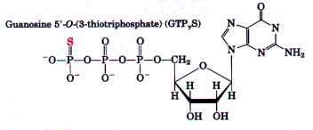
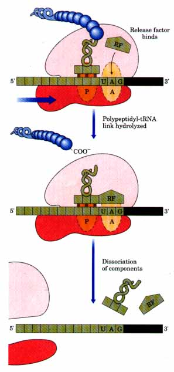
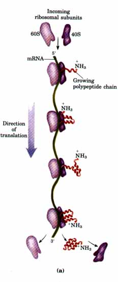
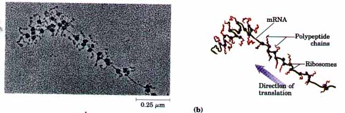
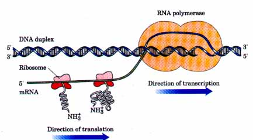
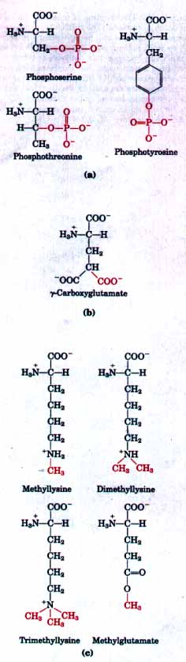
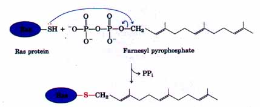
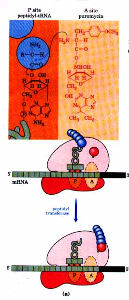
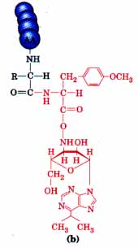
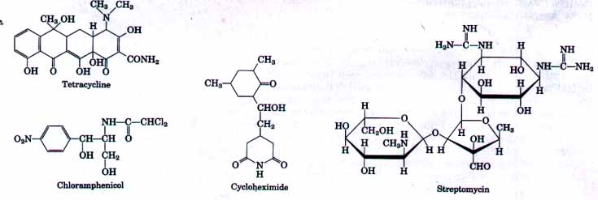

| The GTPase activity of EF-Tu makes an
important contribution to the rate and fidelity of the
overall biosynthetic process. The EF-Tu•GTP complex
exists for a few milliseconds, and the EF-Tu•GDP
complex also exists for a similar period before it
dissociates. Both of these intervals provide an
opportunity for the codon-anticodon interactions to be
verified (i.e., proofread). Incorrect aminoacyl-tRNAs
normally dissociate during one of these periods. If the
GTP analog GTPγS is used in place of GTP,
hydrolysis is slowed, improving the fidelity but reducing
the rate of protein synthesis. The process of protein
synthesis (including the characteristics of
codon-anticodon pairing already described) has clearly
been optimized through evolution to balance the
requirements of both speed and fidelity. Improved
fidelity might diminish speed, whereas increases in speed
would probably compromise fidelity.  This proofreading mechanism establishes only that the proper codon-anticodon pairing has taken place. The identity of the amino acids attached to tRNAs is not checked at all on the ribosome. This was demonstrated experimentally in 1962 by two research groups led by Fritz Lipmann and Seymour Benzer. They isolated enzymatically formed Cys-tRNACys and then chemically converted it into AlatRNACys. This hybrid aminoacyl-tRNA, which carries alanine but contains the anticodon for cysteine, was then incubated with a cell-free system capable of protein synthesis. The newly synthesized polypeptide was found to contain Ala residues in positions that should have been occupied by Cys residues. This important experiment also provided timely proof for Crick's adapter hypothesis. The fact that the amino acids themselves are never checked on the ribosome reinforces the central role of aminoacyl-tRNA synthetases in maintaining the fidelity of protein biosynthesis. |
 Figure 26-29 The termination of protein synthesis in bacteria in response to a termination codon in the A site. First, a release factor, RFl or RF2 depending on which termination codon is present, binds to the A site. This leads in the second step to hydrolysis of the ester linkage between the nascent polypeptide and the tRNA in the P site, and release of the completed polypeptide. Finally, the mRNA, deacylated tRNA, and release factor leave the ribosome, and the ribosome dissociates into its 30S and 50S subunits. |
Elongation continues until the ribosome adds the last amino acid, completing the polypeptide coded by the mRNA. Termination, the fourth stage of polypeptide synthesis, is signaled by one of three termination codons in the mRNA (UAA, UAG, UGA), immediately following the last amino acid codon (Box 26-3).
In bacteria, once a termination codon occupies the ribosomal A site three termination or release factors, the proteins RF1, RF2, and RF3, contribute to (1) the hydrolysis of the terminal peptidyl-tRNA bond, (2) release of the free polypeptide and the last tRNA, now uncharged, from the P site, and (3) the dissociation of the 70S ribosome into its 30S and 50S subunits, ready to start a new cycle of polypeptide synthesis (Fig. 26-29). RFl recognizes the termination codons UAG and UAA, and RFZ recognizes UGA and UAA. Either RFl or RF2 (as appropriate, depending on which codon is present) binds at a termination codon and induces peptidyl transferase to transfer the growing peptide chain to a water molecule rather than to another amino acid. The speciiic function of RF3 has not been firmly established. In eukaryotes, a single release factor called eRF recognizes all three termination codons.
The enzymatic formation of each aminoacyl-tRNA used two highenergy phosphate groups. Additional ATPs are used each time incorrectly activated amino acids are hydrolyzed by the deacylation activity of some aminoacyl-tRNA synthetases (p. 914). One molecule of GTP is cleaved to GDP and Pi during the first elongation step, and another GTP is hydrolyzed in the translocation step. Therefore a total of at least four high-energy bonds is ultimately required for the formation of each peptide bond of the completed polypeptide chain.
B O X 26-3Induced Variation in the Genetic Code: Nonsense SuppressionWhen a termination codon is introduced in the interior of a gene by mutation, translation is prematurely halted and the incomplete polypeptide chains are often inactive. Such mutations are called nonsense mutations. Restoring the gene to its normal function requires a second mutation that either converts the termination codon to a codon specifying an amino acid or alternatively suppresses the effects of the termination codon. The second class of restorative mutations are called nonsense suppressors, and they generally involve mutations in tRNA genes that produce altered (suppressor) tRNAs that can recognize the termination codon and insert an amino acid at that position. Most suppressor tRNAs are created by single base substitutions in the anticodons of minor tRNA species. Suppressor tRNAs constitute an experimentally induced variation in the genetic code involving the reading of what are usually termination codons, as is the case for many naturally occurring code variations described in Box 26-2. Nonsense suppression does not completely disrupt information transfer in the cell. This is because there are usually several copies of the genes for some tRNAs in any cell; some of these duplicate genes are weakly expressed and account for only a minor part of the cellular pool of a particular tRNA. Suppressor mutations usually involve these "minor" tRNA species, leaving the major tRNA to read its codon normally. For example, there are three identical genes for tRNATyr in E. coli, each producing a tRNA with the anticodon (5')GUA. One of these is expressed at relatively high levels and thus represents the major tRNATyr species; the other two genes are duplicates transcribed in only small amounts. A change ,in the anticodon of the tRNA product of one of these duplicate tRNATyr genes, from (5')GUA to (5')CUA, produces a minor tRNATyr species that will insert tyrosine at UAG stop codons. This insertion of tyrosine at UAG is inefficient, but can permit production of enough useful full-length protein from a gene with a nonsense mutation to allow the cell to live. The major tRNATyr maintains the normal genetic code for the majority of the proteins. The base change in the tRNA that leads to the creation of a suppressor tRNA does not always occur in the anticodon. The suppression of UGA nonsense codons, interestingly, generally involves the tRNATrp that normally recognizes UGG. The alteration that allows it to read UGA (and insert Trp at these positions) does not occur in the anticodon. Instead, a G?A change at position 24 (in an arm of the tRNA somewhat removed from the anticodon) alters the anticodon pairing so that it can read both UGG and UGA. A similar change is found in tRNAs involved in the most common naturally occurring variation in the genetic code (UGA = Trp; see Box 26-2). Suppression should lead to many abnormally long proteins, but, for reasons that are not entirely clear, this does not always occur. Many details of the molecular events that occur during translation termination and nonsense suppression are not understood. |
This represents an exceedingly large
thermodynamic "push" in the direction of
synthesis: at least 4 ? 30.5 = 122 kJ/mol of
phosphodiester bond energy is required to generate a
peptide bond having a standard free energy of hydrolysis
of only about -21 kJ/mol. The net free-energy change in
peptide-bond synthesis is thus -101 kJ/mol. Although this
large energy expenditure may appear wasteful, it is again
important to remember that proteins are
information-containing polymers. The biochemical problem
is not simply the formation of a peptide bond, but the
formation of a peptide bond between specific
amino acids. Each of the high-energy bonds expended in
this process plays a role in a step that is critical to
maintaining proper alignment between each new codon in
the mRNA and the amino acid it encodes at the growing end
of the polypeptide. This energy makes possible the nearly
perfect fidelity in the biological translation of the
genetic message of mRNA into the amino acid sequence of
proteins.Polysomes Allow Rapid Translation of a Single MessageLarge clusters of 10 to 100 ribosomes can be isolated from either eukaryotic or bacterial cells that are very active in protein synthesis. Such clusters, called polysomes, can be fragmented into individual ribosomes by the action of ribonuclease. Furthermore, a connecting fiber between adjacent ribosomes is visible in electron micrographs (Fig. 26-30). The connecting strand is a single strand of mRNA, being translated simultaneously by many ribosomes, spaced closely together. The simultaneous translation of a single mRNA by many ribosomes allows highly efficient use of the mRNA. |
 Figure 26-30 A polysome. (a) Four ribosomes are shown translating a eukaryotic mRNA molecule simultaneously, moving from the 5' end to the 3' end. (b) Electron micrograph and explanatory diagram of a polysome from the silk gland of a silk worm larva. The mRNA is being translated by many ribosomes simultaneously. The polypeptide chains become longer as the ribosomes move toward the 3' end of the mRNA. The final product of this process is silk fibroin. |

| In bacteria there is a very tight coupling between transcription and translation. Messenger RNAs are synthesized in the 5'?3' direction and are translated in the same direction. As shown in Figure 26-31, ribosomes begin translating the 5' end of the mRNA before transcription is complete. The situation is somewhat different in eukaryotes, where newly transcribed mRNAs must be transferred out of the nucleus before they can be translated. |  Figure 26-31 The coupling of transceiption and translation in bacteria. The mRNA is translated by ribosomes while it is still being transcribed from DNA by RNA polymerase. This is possible because the mRNA in bacteria does not have to be transported from a nucleus to the cytoplasm before encountering ribosomes. In this schematic diagram the ribosomes are depicted as smaller than the RNA polymerase. In reality the ribosomes (Mr 2.5 ? 106) are an order of magnitude larger than the RNA polymerase (Mr 3.9 ? 105). |
Bacterial mRNAs generally exist for only a few minutes (p. 880) before they are degraded by nucleases. Therefore, in order to maintain high rates of protein synthesis, the mRNA for a given protein or set of proteins must be made continuously and translated with maximum efficiency. The short lifetime of mRNAs in bacteria allows synthesis of a protein to cease rapidly when it is no longer needed by the cell.
In the fifth and final step of protein synthesis, the nascent polypeptide chain is folded and processed into its biologically active form. At some point during or after its synthesis, the polypeptide chain spontaneously assumes its native conformation, which permits the maximum number of hydrogen bonds and van der Waals, ionic, and hydrophobic interactions (see Fig. 7-22). In this way, the linear or one-dimensional genetic message in the mRNA is converted into the three-dimensional structure of the protein. Some newly made proteins do not attain their fmal biologically active conformation until they have been altered by one or more processing reactions called posttranslational modifications. Both prokaryotic and eukaryotic posttranslational modifications are considered in what follows.
Amino-Terminal and Carboxyl-Terminal Modifications Initially, all polypeptides begin with a residue of N-formylmethionine (in bacteria) or methionine (in eukaryotes). However, the formyl group, the amino-terminal Met residue, and often additional amino-terminal and carboxyl-terminal residues may be removed enzymatically and thus do not appear in the final functional proteins.
In as many as 50% of eukaryotic proteins, the amino group of the amino-terminal residue is acetylated after translation. Carboxylterminal residues are also sometimes modified.
Loss of Signal Sequences As we shall see, the 15 to 30 residues at the amino-terminal end of some proteins play a role in directing the protein to its ultimate destination in the cell. Such signal sequences are ultimately removed by specific peptidases.
| The hydroxyl groups of certain Ser, Thr,
and Tyr residues of some proteins are enzymatically
phosphorylated by ATP (Fig. 26-32a); the phosphate groups
add negative charges to these polypeptides. The
functional significance of this modification varies from
one protein to the next. For example, the milk protein
casein has many phosphoserine groups, which function to
bind Ca2+. Given that Ca2+ and phosphate, as well as
amino acids, are required by suckling young, casein
provides three essential nutrients. The phosphorylation
and dephosphorylation of the hydroxyl group of certain
Ser residues is required to regulate the activity of some
enzymes, such as glycogen phosphorylase (see Fig. 14-17).
Phosphorylation of specific Tyr residues of some proteins
is an important step in the transformation of normal
cells into cancer cells (see Fig. 22-37). Extra carboxyl groups may be added to Asp and Glu residues of sorne proteins. For example, the blood-clotting protein prothrombin contains a number of γ-carboxyglutamate residues (Fig. 26-32b) in its amino-terminal region, introduced by a vitamin K-requiring enzyme. These groups bind Ca2+, required to initiate the clotting mechanism. In some proteins certain Lys residues are methylated enzymatically (Fig. 26-32c). Monomethyl- and dimethyllysine residues are present in some muscle proteins and in cytochrome c. The calmodulin of most organisms contains one trimethyllysine residue at a specific position. In other proteins the carboxyl groups of some Glu residues undergo methylation (Fig. 26-32c), which removes their negative charge. Attachment of Carbohydrate Side ChainsThe carbohydrate side chains of glycoproteins are attached covalently during or after the synthesis of the polypeptide chain.In some glycoproteins the carbohydrate side chain is attached enzymatically to Asn residues (N-linked oligosaccharides), in others to Ser or Thr residues (O-linked oligosaccharides; see Fig. 11-23). Many proteins that function extracellularly, as well as the "lubricating" proteoglycans coating mucous membranes, contain oligosaccharide side chains (see Fig. 11-21). |
 Figure 26-32 Some modified amino acid residues. (a) Phosphorylated amino acids. (b) A carboxylated amino acid. (c) Some methylated amino acids. |
A number of eukaryotic proteins are isoprenylated; a thioether bond is formed between the isoprenyl group and a Cys residue of the protein (see Fig. 10-3). The isoprenyl groups are derived from pyrophosphate intermediates of the cholesterol biosynthetic pathway (see Fig. 20-34), such as farnesyl pyrophosphate (Fig. 26-33). Proteins modified in this way include the products of the ras oncogenes and proto-oncogenes (Chapter 22), G proteins (Chapter 22), and proteins called lamins, found in the nuclear matrix. In some cases the isoprenyl group serves to help anchor the protein in a membrane. The transforming (carcinogenic) activity of the ras oncogene is lost when isoprenylation is blocked, stimulating great interest in identifying inhibitors of this posttranslational modification pathway for use in cancer chemotherapy.
Many prokaryotic and eukaryotic proteins
require for their activity covalently bound prosthetic
groups; these are attached to the polypeptide chain after
it leaves the ribosome. Two examples are the covalently
bound biotin molecule in acetylCoA carboxylase and the
heme group of cytochrome c. Proteolytic ProcessingMany proteins-for example, insulin (see Fig. 22-20), some viral proteins, and proteases such as trypsin and chymotrypsin (see Fig. 8-30)-are initially synthesized as larger, inactive precursor proteins. These precursors are proteolytically trimmed to produce their fmal, active forms. |
 Figure 26-33 Farnesylation of a Cys residue on a protein. The thioether linkage is shown in red. The ras protein is the product of the ras oncogene |
Proteins to be exported from eukaryotic cells, after undergoing spontaneous folding into their native conformations, are often covalently cross-linked by the formation of intrachain or interchain disulfide bridges between Cys residues. The cross-links formed in this way help to protect the native conformation of the protein molecule from denaturation in an extracellular environment that can differ greatly from that inside the cell.
Protein synthesis is a central function in cellular physiology, and as such it is the primary target of a wide variety of naturally occurring antibiotics and toxins. Except as noted, these antibiotics inhibit protein synthesis in bacteria. The differences between bacterial and eukaryotic protein synthesis are sufiicient that most of these compounds are relatively harmless to eukaryotic cells. Antibiotics are important "biochemical weapons," synthesized by some microorganisms and extremely toxic to others. Antibiotics have become valuable tools in the study of protein synthesis; nearly every step in protein synthesis can be specifically inhibited by one antibiotic or another.
| One of the best-understood inhibitory
antibiotics is puromycin, made by the mold Streptomyces
alboniger. Puromycin has a structure very
similar to the 3' end of an aminoacyl-tRNA (Fig. 26-34).
It binds to the A site and participates in all elongation
steps up to and including peptide bond formation,
producing a peptidyl puromycin. However, puromycin will
not bind to the P site, nor does it engage in
translocation. It dissociates from the ribosome shortly
after it is linked to the carboxyl terminus of the
peptide, prematurely terminating synthesis of the
polypeptide. Tetracyclines inhibit protein synthesis in bacteria by blocking the A site on the ribosome, inhibiting binding of aminoacyl-tRNAs. Chloramphenicol inhibits protein synthesis by bacterial (and mitochondrial and chloroplast) ribosomes by blocking peptidyl transfer but does not affect cytosolic protein synthesis in eukaryotes. Conversely, cycloheximide blocks the peptidyl transferase of 80S eukaryotic ribosomes but not that of 70S bacterial (and mitochondrial and chloroplast) ribosomes. Streptomycin, a basic trisaccharide, causes misreading of the genetic code in bacteria at relatively low concentrations and inhibits initiation at higher concentrations. Several other inhibitors of protein synthesis are notable because of their toxicity to humans and other mammals. Diphtheria toxin (Mr 65,000) catalyzes the ADP-ribosylation of a diphthamide (a modified histidine) residue on eukaryotic elongation factor eEF2, thereby inactivating it (see Box 8-4). Ricin, an extremely toxic protein of the castor bean, inactivates the 60S subunit of eukaryotic ribosomes. |
  Figure 26-34 Puromycin resembles the aminoacyl end of a charged tRNA and can bind to the ribosomal A site, where it can participate in peptide bond formation (a). The product of this reaction, instead of being translocated to the P site, dissociates from the ribosome, causing premature chain termination. (b) Peptidyl puromycin. |

The eukaryotic cell is made up of many structures, compartments, and organelles, each with specific functions requiring distinct sets of proteins and enzymes. The synthesis of almost all these proteins begins on free ribosomes in the cytosol. How are these proteins directed to their final cellular destinations?
The answer to this question is at once complex, fascinating, and unfortunately incomplete. Enough is known, however, to outline many key steps in this process. Proteins destined for secretion, integration in the plasma membrane, or inclusion in lysosomes generally share the first few steps of a transport pathway that begins in the endoplasmic reticulum. Proteins destined for mitochondria, chloroplasts, or the nucleus each use separate mechanisms, and proteins destined for the cytosol simply remain where they are synthesized. The pathways by which proteins are sorted and transported to their proper cellular location are often referred to as protein targeting pathways.
The most important element in all of these targeting systems (with the exception of cytosolic and nuclear proteins) is a short amino acid sequence at the amino terminus of a newly synthesized polypeptide called the signal sequence. This signal sequence, whose function was first postulated by David Sabatini and Giinter Blobel in 1970, directs a protein to its appropriate location in the cell and is removed during transport or when the protein reaches its fmal destination. In many cases, the targeting capacity of particular signal sequences has been confirmed by fusing the signal sequence from one protein, say protein A, to a different protein B, and showing that the signal directs protein B to the location where protein A is normally found.
The selective degradation of proteins no longer needed in the cell also relies largely on a set of molecular signals embedded in each protein's structure; most of these signals are not yet understood. The final part of this chapter is devoted to the processes of targeting and degradation, with emphasis on the underlying signals and molecular regulation that are so crucial to cellular metabolism. Except where noted, the focus is on eukaryotic cells.